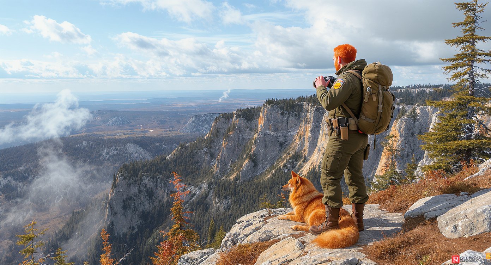

Forest Ranger — это глубокое сюжетное экшн-приключение, действие которого разворачивается на территории обширного, вымышленного заповедника в России. В этой игре повседневная забота о природе тесно переплетается с опасным криминальным расследованием. Игрок берет на себя ответственность за лесной участок, где каждый выбор влияет на состояние местной флоры и фауны, а за каждым деревом может скрываться угроза.
Геймплей строится на балансе между исследованием, стелсом, тактическим боем и менеджментом ресурсов. Ежедневная рутина егеря включает в себя:
Официальная версия гибели предыдущего егеря (отца главного героя) гласит о несчастном случае — нападении взбесившегося медведя. Местные жители списывают всё на мистику и духов леса, но правда куда страшнее. За пугающими легендами скрывается жестокий криминальный синдикат браконьеров.
Игроку предстоит распутать клубок улик и узнать шокирующую правду: отца заманили на фальшивую встречу и хладнокровно убили, натравив на него медведя, которому предварительно вкололи вирус бешенства. Главный сюжетный твист заключается в том, что во главе банды браконьеров стоит человек, которого отец героя считал своим лучшим другом. Это история о предательстве, защите родного дома и восстановлении справедливости.
Целевая аудитория: Игроки от 20 лет, любители сюжетных экшн-приключений, стелса и природы.
Платформы: Android (через российские магазины приложений, такие как RuStore), iOS (при наличии технической возможности).
Монетизация: Классическая премиум-модель (Pay-to-play). Мы выступаем против навязчивой рекламы и микротранзакций.